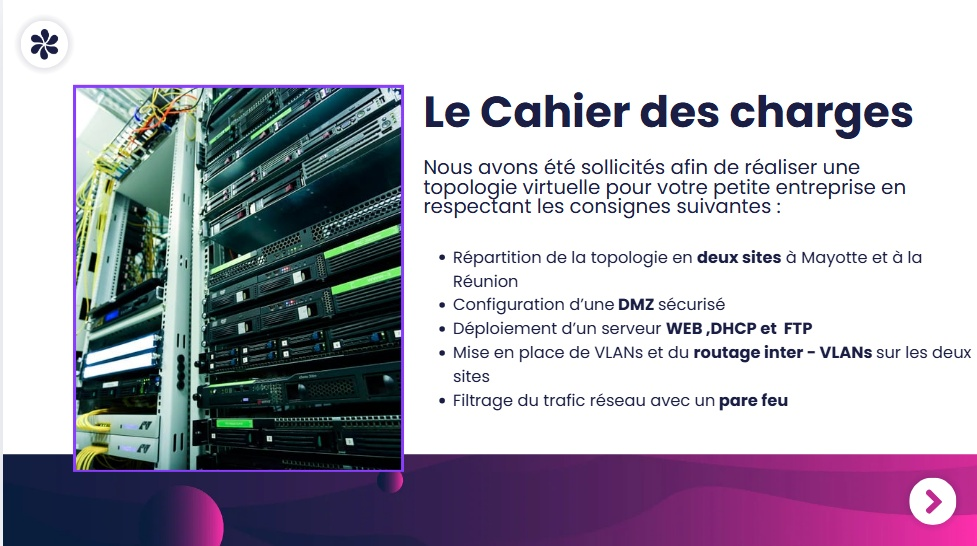
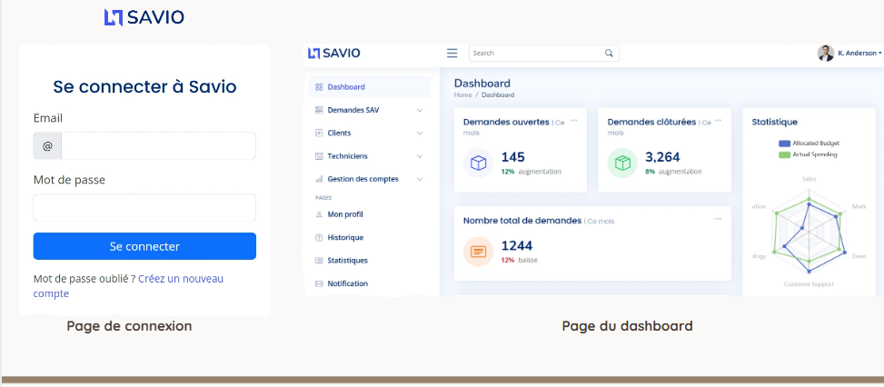
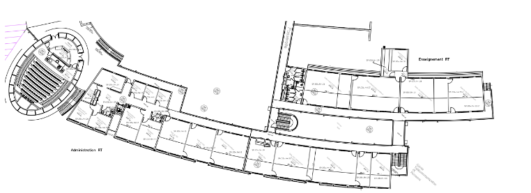
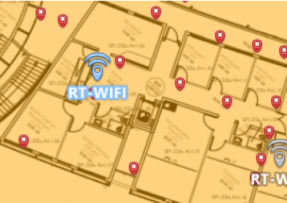
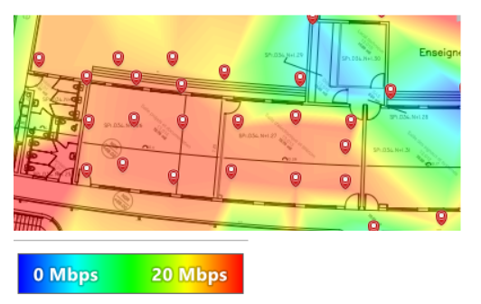

Projets Réalisés (1ère Année)
Maquette Virtuelle d'Architecture Réseau Multi-Site
Contexte du Projet
Dans le cadre de cette réalisation d'envergure menée de manière autonome, j'ai conçu et configuré l'intégralité d'une infrastructure réseau virtuelle pour une petite entreprise en pleine expansion, dont l'activité s'étend sur deux sites géographiques distincts : La Réunion et Mayotte.
J'ai assuré le rôle d'ingénieur de déploiement, prenant en charge le cycle de réalisation, depuis l'analyse des besoins du client et les contraintes de sécurité (mise en place d'une DMZ, filtrage de trafic) jusqu'à la validation fonctionnelle de la maquette.


Ce que j'ai appris dans ce projet
Au-delà des compétences techniques de base que j'ai pu assimiler, ce projet étalé sur 5 mois de travail m'a permis de réellement résoudre un problème concret. Ce n'était pas juste des configurations à réaliser, j'ai du réaliser un vrais travail d'analyse des besoins et à chaque fois explorer mon champ des possibles pour trouver le meilleur moyen pourrépondre à la problématique du client.
Ce projet a aussi été planifié de manière méthodique et calculé. J'ai du segmenter chaque partie en plusieurs tâche afin d'avoir une approche professionnel de la chose.
Grâce à cette expérience, j'ai pu me mettre dans la peau d'un technicien système et réseau débutant qui conçoit un environnement de production fonctionnel, performant et sécurisé, bien au-delà de l'approche purement théorique.
Développement d'un Site Web de Service Après-Vente (SAV)
Modélisation & Envers du Décor
Ce projet consistait à développer une plateforme web complète dédiée au Service Après-Vente pour le compte d'une entreprise fictive. Au cœur du groupe technique, mon rôle principal consistait à concevoir et implémenter la structure de la base de données, à travers la confection de diagrammes et schémas UML.
Cependant, l'aspect le plus formateur de ce projet a résidé dans "l'envers du décor" commercial et collaboratif. En équipe, nous avons dû réaliser plusieurs livrables et jalons afin de "vendre" notre projet à un client (fictif) exigeant.
Nous avons ainsi planifié et animé plusieurs visioconférences de suivi et orchestré une démonstration applicative en conditions réelles à destination des employés de l'entreprise. Cette expérience a considérablement renforcé mes soft skills : communication client, vulgarisation technique et conduite du changement. Je n'ai pas simplement développé un produit informatique, j'ai participé activement à sa viabilité sur le marché.

Audit Technique de la Couverture Wi-Fi d'un Établissement

Analyse de Terrain & Cartographies Spectrales
Au sein d'une équipe de trois techniciens, j'ai participé à la réalisation complète d'un audit technique de couverture Wi-Fi au sein d'une infrastructure réelle. Ma mission principale consistait à identifier, analyser et isoler les différentes failles ou atténuations de signal affectant les bandes de fréquences de 2.4 GHz et 5 GHz.
L'objectif final consistait à proposer des solutions techniques viables et argumentées pour pallier les défauts constatés et optimiser la qualité de service pour les usagers du site.


Conclusion de l'expertise de terrain
Ce projet m'a permis de déceler et de résoudre les problématiques physiques inhérentes à une configuration réseau préexistante sur un site bien réel. L'informatique ne se limite pas à des simulations virtuelles : mener cette enquête de terrain face à des contraintes matérielles concrètes m'a apporté une expérience précieuse, directement alignée avec les réalités opérationnelles du monde professionnel.